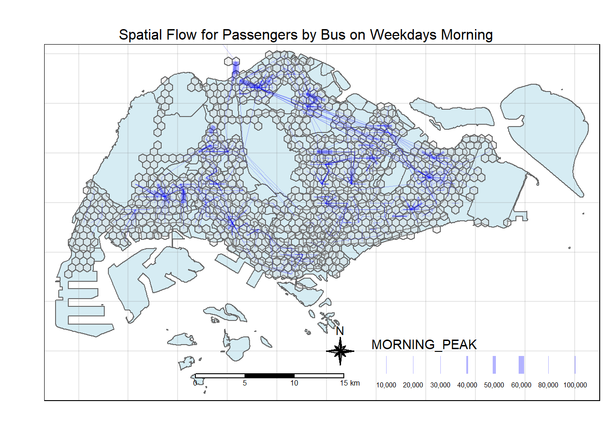
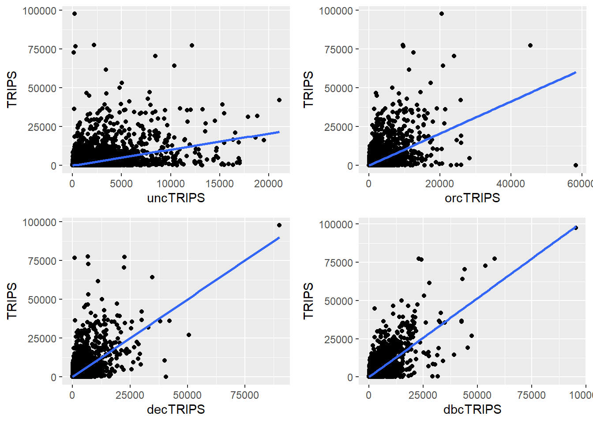

pacman::p_load(tmap, sf, sp, DT,
performance, reshape2,
ggpubr, tidyverse, stplanr, jsonlite)Take Home Ex 2
Overview of the Exercise
What are the driving forces behind urban dwellers to weak up early in morning to commute from their home locations to their work places? What are the impact of removing a public bus service on the commuters reside along the corridor of the bus route? These and many other questions related to urban mobility are challenges faced by transport operators and urban managers.
To provide answer to this question, traditionally, commuters survey will be used. However, commuters survey is a very costly, time-consuming and laborous, not to mention that the survey data tend to take a long time to clean and analyse. As a result, it is not unusual, by the time the survey report was ready, most of the information already out-of-date!
As city-wide urban infrastructures such as public buses, mass rapid transits, public utilities and roads become digital, the data sets obtained can be used as a framework for tracking movement patterns through space and time. This is particularly true with the recent trend of massive deployment of pervasive computing technologies such as GPS on the vehicles and SMART cards used by public transport commuters.
Unfortunately, this explosive growth of geospatially-referenced data has far outpaced the planner’s ability to utilize and transform the data into insightful information thus creating an adverse impact on the return on the investment made to collect and manage this data.
This take-home exercise is motivated by two main reasons. Firstly, despite increasing amounts of open data available for public consumption, there has not been significant practice research carried out to show how these disparate data sources can be integrated, analysed, and modelled to support policy making decisions.
Secondly, there is a general lack of practical research to show how geospatial data science and analysis (GDSA) can be used to support decision-making.
Hence, your task for this take-home exercise is to conduct a case study to demonstrate the potential value of GDSA to integrate publicly available data from multiple sources for building a spatial interaction models to determine factors affecting urban mobility patterns of public bus transit.
Open Gov Data
For the purpose of this assignment, data from several open government sources will be used:
Passenger Volume by Origin Destination Bus Stops, Bus Stop Location, Train Station and Train Station Exit Point, just to name a few of them, from LTA DataMall.
Master Plan 2019 Subzone Boundary, HDB Property Information, School Directory and Information and other relevant data from Data.gov.sg.
Specially collected data
- Businesses, retail and services, leisure and recreation, etc geospatial data sets assemble by course instructor. (Refer to eLearn)
Task
The specific tasks of this take-home exercise are as follows:
Geospatial Data Science
Derive an analytical hexagon data of 375m (this distance is the perpendicular distance between the centre of the hexagon and its edges) to represent the traffic analysis zone (TAZ).
With reference to the time intervals provided in the table below, construct an O-D matrix of commuter flows for a time interval of your choice by integrating Passenger Volume by Origin Destination Bus Stops and Bus Stop Location from LTA DataMall. The O-D matrix must be aggregated at the analytics hexagon level
Peak hour period Bus tap on time What it Means (Likely) Weekday morning peak 6am to 9am Going to work and school (our data will be focused on this) Weekday afternoon peak 5pm to 8pm Returning home from work or school Weekend/holiday morning peak 11am to 2pm Heading out for retail shopping, attractions etc Weekend/holiday evening peak 4pm to 7pm Returning home for Mon Blues Display the O-D flows of the passenger trips by using appropriate geovisualisation methods (not more than 5 maps).
Describe the spatial patterns revealed by the geovisualisation (not more than 100 words per visual).
Assemble at least three propulsive and three attractiveness variables by using aspatial and geospatial from publicly available sources.
Compute a distance matrix by using the analytical hexagon data derived earlier.
Spatial Interaction Modelling
Calibrate spatial interactive models to determine factors affecting urban commuting flows at the selected time interval.
Present the modelling results by using appropriate geovisualisation and graphical visualisation methods. (Not more than 5 visuals)
With reference to the Spatial Interaction Model output tables, maps and data visualisation prepared, describe the modelling results. (not more than 100 words per visual).
Getting Started
Loading the Packages
Preparing the Flow Data
#|eval: false
odbus <- read_csv("data/aspatial/origin_destination_bus_202310.csv")#|eval: false
odbus6_9 <- odbus %>%
filter(DAY_TYPE == "WEEKDAY") %>%
filter(TIME_PER_HOUR >= 6 &
TIME_PER_HOUR <= 9) %>%
group_by(ORIGIN_PT_CODE,
DESTINATION_PT_CODE) %>%
summarise(TRIPS = sum(TOTAL_TRIPS))#|eval: false
busstops = st_read(dsn = "data/geospatial",
layer = "BusStop") %>%
st_transform (crs = 3414)Reading layer `BusStop' from data source
`C:\zjjgithubb\ISSS624\TakehomeEx\Ex02\data\geospatial' using driver `ESRI Shapefile'
Simple feature collection with 5161 features and 3 fields
Geometry type: POINT
Dimension: XY
Bounding box: xmin: 3970.122 ymin: 26482.1 xmax: 48284.56 ymax: 52983.82
Projected CRS: SVY21Create analytical hexagon data of 325m (this distance is the perpendicular distance between the centre of the hexagon and its edges) - so should be c(750, 750).
#|eval: false
hexagon_grid = st_make_grid(busstops, c(750, 750), what = "polygons", square = FALSE)
hexagon_grid_sf = st_sf(hexagon_grid) %>%
mutate(grid_id = 1:length(lengths(hexagon_grid)))#|eval: false
hexagon_grid_sf$n_busstops = lengths(st_intersects(hexagon_grid_sf, busstops))
hexagon_busstop = filter(hexagon_grid_sf, n_busstops > 0)
busstop_grid <- st_intersection(busstops, hexagon_grid_sf)%>%
select(BUS_STOP_N, grid_id) %>%
st_drop_geometry()#|eval: false
od_data_wdam <- left_join(odbus6_9 , busstop_grid,
by = c("ORIGIN_PT_CODE" = "BUS_STOP_N")) %>%
rename(ORIGIN_BS = ORIGIN_PT_CODE,
ORIGIN_Grid = grid_id,
DESTIN_BS = DESTINATION_PT_CODE)#|eval: false
duplicate <- od_data_wdam %>%
group_by_all() %>%
filter(n()>1) %>%
ungroup()#|eval: false
od_data_wdam <- unique(od_data_wdam)#|eval: false
od_data_wdam <- left_join(od_data_wdam , busstop_grid,
by = c("DESTIN_BS" = "BUS_STOP_N"))
duplicate <- od_data_wdam %>%
group_by_all() %>%
filter(n()>1) %>%
ungroup()
od_data_wdam <- unique(od_data_wdam)
od_data_wdam <- od_data_wdam %>%
rename(DESTIN_Grid = grid_id) %>%
drop_na() %>%
group_by(ORIGIN_Grid, DESTIN_Grid) %>%
summarise(MORNING_PEAK = sum(TRIPS))
#Removing Intra-Grid Flow
od_wdam_cleaned <- od_data_wdam[od_data_wdam$ORIGIN_Grid!=od_data_wdam$DESTIN_Grid,]Write/Read Data into rds for Subsequent Usage
Code
write_rds(hexagon_busstop, "data/rds/hexagon_busstop.rds")
write_rds(od_wdam_cleaned, "data/rds/od_wdam_cleaned.rds")
write_rds(hexagon_grid_sf, "data/rds/hexagon_grid_sf.rds")Code
hexagon_bustops <- read_rds("data/rds/hexagon_busstop.rds")
od_wdam_cleaned <- read_rds("data/rds/od_wdam_cleaned.rds")
hexagon_grid_sf <- read_rds("data/rds/hexagon_grid_sf.rds")
schools_sf <- read_rds("data/rds/schools_sf.rds")
mpsz <- read_rds("data/rds/mpsz.rds")Visualising the Spatial Interaction
Creating Desire Lines
flowLine <- od2line(flow = od_wdam_cleaned,
zones = hexagon_grid_sf,
zone_code = "grid_id")tmap_options(check.and.fix = TRUE)
tmap_mode("plot")
tm_shape(mpsz) +
tm_polygons(col = "lightblue", alpha = 0.5) +
tm_layout(main.title = "Spatial Flow for Passengers by Bus on Weekdays Morning",
main.title.position = "center",
main.title.size = 1.0,
frame = TRUE) +
tm_borders(alpha = 0.5) +
tm_compass(type="8star", size = 2) +
tm_scale_bar() +
tm_grid(alpha =0.2, labels.show = FALSE)+
tm_shape(hexagon_bustops) +
tm_polygons(alpha = 0.3) +
flowLine %>%
filter(MORNING_PEAK >= 5000) %>%
tm_shape() +
tm_lines(lwd = "MORNING_PEAK",
style = "quantile",
scale = c(0.1, 1, 3, 5, 7, 10),
n = 6,
col = "blue",
alpha = 0.3)
Analysis
Spatial Patterns
Attractiveness Variables
We will compile three attractiveness variables, namely:
Schools (their place of study)
Business (their place of work)
F&B (to buy breakfast before heading to their final destination, assuming that they will buy food nearer to their location)
Preparing the School Data (using data from In Class Ex 4)
hexagon_bustops$SCHOOL_COUNT <- lengths(
st_intersects(
hexagon_bustops, schools_sf))sum(hexagon_bustops$SCHOOL_COUNT)Preparing the Business Data
We assume that the businesses equate to the companies etc that people will travel to for their work.
business_sf <- st_read(dsn = "data/geospatial",
layer = "Business")
write_rds (business_sf, "data/rds/business_sf.rds")hexagon_bustops$BIZ_COUNT <- lengths(
st_intersects(
hexagon_bustops, business_sf))Preparing the F&B Data
food_sf <- st_read(dsn = "data/geospatial",
layer = "F&B") %>%
st_transform (crs=3414)
write_rds (food_sf, "data/rds/food_sf.rds")hexagon_bustops$FOOD_COUNT <- lengths(
st_intersects(hexagon_bustops, food_sf))Propulsive Variables
We will look at three propulsive variables, namely:
Number of Population
Number of Train Stations Exits
Number of Bus Stops (already available since Take Home Ex 1)
Location of Pre Schools (assuming parents will bring their child to the nearest pre-school which should be within walking distance, before going to the nearest bus stop to travel for work)
Number of Buses available within each grid - tried to obtain the bus route data from LTA Data Mall, but there data seems limited and outdated (no actual date on when it was last updated); so decided not to pursue this.
Preparing the Data on Populace
We utilise the hdb data provided by Prof.
hdb <- read_csv ("data/aspatial/hdb.csv")Based on the data, we will be able to intersect the locations, types of dwellings (whether 1-room, 2-room, rental and etc) to have an estimate on the number of population in each grid.
So based on past studies in 2018:
| Types of Dwelling | Average Household Size | Remarks |
|---|---|---|
| 1-Room / Rental | 2.3 | |
| 2-Room | 2.19 | |
| 3-Room | 2.63 | |
| 4-Room | 3.42 | |
| 5-Room / Exec | 3.77 |
hdb_tidy <- hdb %>%
select(13:25, "lat", "lng") %>%
mutate(one_Rm = (`1room_sold` + `1room_rental` + studio_apartment_sold + other_room_rental)*2.3) %>%
mutate(two_Rm = (`2room_sold` + `2room_rental`)*2.19) %>%
mutate(three_Rm = (`3room_sold` + `3room_rental`)*2.63) %>%
mutate(four_Rm = (`4room_sold`) * 3.42) %>%
mutate(five_rm = (`5room_sold` + `exec_sold` + multigen_sold)*3.77)hdb_tidy <- hdb_tidy %>%
select (14:20) %>%
mutate (pop = one_Rm + two_Rm + three_Rm + four_Rm + five_rm)Covert to sf data.
hdb_sf <- st_as_sf(hdb_tidy,
coords = c("lng", "lat"),
crs = 4326) %>%
st_transform (crs=3414)
write_rds (hdb_sf, "data/rds/hdb_sf.rds")hexagon_bustops$POP <- sapply(
st_intersects(hexagon_bustops, hdb_sf),
function(indices) sum(hdb_sf$pop[indices])
)Train Station Exit
I think that the train station exits can be considered as both propulsive and attractive, e.g. people will take buses to the nearest train station exit, then take on the mrt to their next destination.
But they can also exit from the train station, then proceed to take bus to their place of work or study.
I downloaded the static shp file of the train station exits from LTADataMall.
train_exits_sf <- st_read(dsn = "data/geospatial",
layer = "Train_Station_Exit_Layer") %>%
st_transform (crs=3414)write_rds (train_exits_sf, "data/rds/train_exits_sf.rds")hexagon_bustops$TRAIN_EXITS_COUNT <- lengths(
st_intersects(
hexagon_bustops, train_exits_sf))Location of Pre-Schools
Using the Onemap API, I gain access to the “Child Care Services” theme.
This is updated by ECDA in Dec 23 and i saved it in JSON format.
I will use the jsonlite package to convert the data.
childcare <- fromJSON("data/aspatial/childcare.json", flatten = TRUE)childcare_tidy <- childcare %>%
select(9:14) %>%
slice(-1) %>%
separate(col = SrchResults.LatLng, into = c("lat", "long"), sep = ",", convert = TRUE)childcare_sf <- st_as_sf(childcare_tidy,
coords = c("long", "lat"),
crs = 4326) %>%
st_transform (crs=3414)
write_rds (childcare_sf, "data/rds/childcare_sf.rds")hexagon_bustops$CHILDCARE_COUNT <- lengths(
st_intersects(
hexagon_bustops, childcare_sf))All the data were combined and written into an rds file.
write_rds (hexagon_bustops, "data/rds/combined_data.rds")combined_data <- read_rds("data/rds/combined_data.rds")Spatial Interaction Modelling
Computing the Distance Matrix
hexa_sp <- as(hexagon_busstop,"Spatial")
hexa_spdist <- spDists(hexa_sp,
longlat = FALSE) #latlong is FALSE cuz its is in Svy21 alr
head(dist, n=c(10, 10))hexa_id <- hexagon_busstop$grid_idcolnames(dist) <- paste0(hexa_id) rownames(dist) <- paste0(hexa_id)distPair <- melt(dist) %>% rename(dist = value) head(distPair, 10)distPair$dist <- ifelse(distPair$dist == 0,
50, distPair$dist)distPair <- distPair %>% rename(orig = Var1,
dest = Var2)write_rds(distPair, "data/rds/distPair.rds") distPair <- read_rds("data/rds/distPair.rds")Preparing the Flow Data
Grouping the Flow Data
flow_data <- od_wdam_cleaned %>%
group_by(ORIGIN_Grid, DESTIN_Grid) %>%
summarize(TRIPS = sum(MORNING_PEAK)) flow_data <- od2line(flow = flow_data,
zones = hexagon_grid_sf,
zone_code = "grid_id")Separating the Intra-Flow Data
flow_data$FlowNoIntra <- ifelse(
flow_data$ORIGIN_Grid == flow_data$DESTIN_Grid,
0, flow_data$TRIPS)
flow_data$offset <- ifelse(
flow_data$ORIGIN_Grid == flow_data$DESTIN_Grid,
0.000001, 1)Combining Passenger Volume Data with Dist Data
flow_data1 <- flow_data %>%
left_join (distPair,
by = c("ORIGIN_Grid" = "orig",
"DESTIN_Grid" = "dest"))Combining the Data with Propulsive and Attractive Variables Data
combined_tidy <- combined_data %>%
st_drop_geometry()combined_tidy$DESTIN_TRAIN_EXITS <- combined_tidy$TRAIN_EXITS_COUNTflow_data_tidy <- flow_data1 %>%
left_join(
combined_tidy %>%
select(grid_id, SCHOOL_COUNT, BIZ_COUNT, FOOD_COUNT, DESTIN_TRAIN_EXITS),
by = c("DESTIN_Grid" = "grid_id")
) %>%
rename(DIST = dist)flow_data_tidy <- flow_data_tidy %>%
left_join(
combined_tidy %>%
select(grid_id, POP, TRAIN_EXITS_COUNT, CHILDCARE_COUNT, n_busstops),
by = c("ORIGIN_Grid" = "grid_id")
) Ensure variables with value = 0 are adjusted to 0.99.
flow_data_tidy$SCHOOL_COUNT <- ifelse(
flow_data_tidy$SCHOOL_COUNT == 0,
0.99, flow_data_tidy$SCHOOL_COUNT)
flow_data_tidy$BIZ_COUNT <- ifelse(
flow_data_tidy$BIZ_COUNT == 0,
0.99, flow_data_tidy$BIZ_COUNT)
flow_data_tidy$FOOD_COUNT <- ifelse(
flow_data_tidy$FOOD_COUNT == 0,
0.99, flow_data_tidy$FOOD_COUNT)
flow_data_tidy$TRAIN_EXITS_COUNT <- ifelse(
flow_data_tidy$TRAIN_EXITS_COUNT == 0,
0.99, flow_data_tidy$TRAIN_EXITS_COUNT)
flow_data_tidy$DESTIN_TRAIN_EXITS <- ifelse(
flow_data_tidy$DESTIN_TRAIN_EXITS == 0,
0.99, flow_data_tidy$DESTIN_TRAIN_EXITS)
flow_data_tidy$POP <- ifelse(
flow_data_tidy$POP == 0,
0.99, flow_data_tidy$POP)
flow_data_tidy$CHILDCARE_COUNT <- ifelse(
flow_data_tidy$CHILDCARE_COUNT == 0,
0.99, flow_data_tidy$CHILDCARE_COUNT)write_rds (flow_data_tidy, "data/rds/flow_data_tidy.rds")Calibrating Spatial Interaction Models
flow_data_tidy <- read_rds ("data/rds/flow_data_tidy.rds")We will calibrate separate Spatial Interaction Models for inter- and intra-zonal flows. For the Ex, we will focus our attention on inter-zonal flow. Hence, we need to exclude the intra-zonal flow from flow_data.
First, two new columns called FlowNoIntra and offset will be created by using the code chunk below.
flow_data_tidy$FlowNoIntra <- ifelse(
flow_data_tidy$ORIGIN_Grid == flow_data_tidy$DESTIN_Grid,
0, flow_data_tidy$TRIPS)
flow_data_tidy$offset <- ifelse(
flow_data_tidy$ORIGIN_Grid == flow_data_tidy$DESTIN_Grid,
0.000001, 1)According to the syntax used to derive values in FlowNoIntra field, all intra-zonal flow will be given a value of 0 or else the original flow values will be inserted.
Next, inter-zonal flow will be selected from flow_data and save into a new output data.frame called inter_zonal_flow by using the code chunk below.
inter_zonal_flow <- flow_data_tidy %>%
filter(FlowNoIntra > 0) %>%
mutate(ORIGIN_Grid = as.factor(ORIGIN_Grid)) %>%
mutate(DESTIN_Grid = as.factor(DESTIN_Grid)) Unconstrained Spatial Interaction Model
uncSIM <- glm(formula = TRIPS ~
log(SCHOOL_COUNT) +
log(BIZ_COUNT) +
log(FOOD_COUNT) +
log(POP) +
log(TRAIN_EXITS_COUNT) +
log(DESTIN_TRAIN_EXITS) +
log(CHILDCARE_COUNT) +
log(n_busstops) +
log(DIST),
family = poisson(link = "log"),
data = inter_zonal_flow,
na.action = na.exclude)
write_rds(uncSIM, "data/rds/uncSIM.rds")uncSIM <- read_rds("data/rds/uncSIM.rds")summary(uncSIM)Origin - Constrained Model
Note
For origin-constrained model, only explanatory variables representing the attractiveness at the destinations will be used.
All the explanatory variables including distance will be log transformed.
ORIGIN_Grid is used to model 𝜇𝑖 . It must be in categorical data type.
It is important to note that -1 is added in the equation after the distance variable. The -1 serves the purpose of removing the intercept that by default, glm will insert into the model.
orcSIM_Poisson <- glm(formula = TRIPS ~
ORIGIN_Grid +
log(SCHOOL_COUNT) +
log(BIZ_COUNT) +
log(FOOD_COUNT) +
log(DESTIN_TRAIN_EXITS) +
log(DIST) - 1,
family = poisson(link = "log"),
data = inter_zonal_flow,
na.action = na.exclude)
write_rds(orcSIM_Poisson, "data/rds/orcSIM_Poisson.rds")orcSIM_Poisson <- read_rds("data/rds/orcSIM_Poisson.rds")tail(summary(orcSIM_Poisson)$coefficients, n = 10)Destination Constrained Model
Look at the propulsive variables.
decSIM <- glm(formula = TRIPS ~
DESTIN_Grid +
log(POP) +
log(CHILDCARE_COUNT) +
log(TRAIN_EXITS_COUNT) +
log(n_busstops) +
log(DIST) - 1,
family = poisson(link = "log"),
data = inter_zonal_flow,
na.action = na.exclude)
write_rds(decSIM, "data/rds/decSIM.rds")decSIM <- read_rds("data/rds/decSIM.rds")Doubly Constrained Model
dbcSIM <- glm(formula = TRIPS ~
ORIGIN_Grid +
DESTIN_Grid +
log(DIST),
family = poisson(link = "log"),
data = inter_zonal_flow,
na.action = na.exclude)write_rds (dbcSIM, "data/rds/dbcSIM.rds")dbcSIM <- read_rds("data/rds/dbcSIM.rds")Model Comparisons
We will use compare_performance() of performance package.
First of all, let us create a list called model_list by using the code chunk below.
model_list <- list(unconstrained=uncSIM,
originConstrained=orcSIM_Poisson,
destinationConstrained=decSIM,
doublyConstrained=dbcSIM)Next, we will compute the RMSE of all the models in model_list file by using the code chunk below.
compare_performance(model_list,
metrics = "RMSE")# Comparison of Model Performance Indices
Name | Model | RMSE
-----------------------------------------
unconstrained | glm | 1625.597
originConstrained | glm | 1491.508
destinationConstrained | glm | 1396.745
doublyConstrained | glm | 1172.123Visualising the Fitted Values
df <- as.data.frame(uncSIM$fitted.values) %>%
round(digits = 0)SIM_data <- inter_zonal_flow %>%
cbind(df) %>%
rename(uncTRIPS = "uncSIM.fitted.values")df <- as.data.frame(orcSIM_Poisson$fitted.values) %>%
round(digits = 0)SIM_data <- SIM_data %>%
cbind(df) %>%
rename(orcTRIPS = "orcSIM_Poisson.fitted.values")df <- as.data.frame(decSIM$fitted.values) %>%
round(digits = 0)SIM_data <- SIM_data %>%
cbind(df) %>%
rename(decTRIPS = "decSIM.fitted.values")df <- as.data.frame(dbcSIM$fitted.values) %>%
round(digits = 0)SIM_data <- SIM_data %>%
cbind(df) %>%
rename(dbcTRIPS = "dbcSIM.fitted.values")write_rds(SIM_data, "data/rds/SIM_data.rds")unc_p <- ggplot(data = SIM_data,
aes(x = uncTRIPS,
y = TRIPS)) +
geom_point() +
geom_smooth(method = lm)
orc_p <- ggplot(data = SIM_data,
aes(x = orcTRIPS,
y = TRIPS)) +
geom_point() +
geom_smooth(method = lm)
dec_p <- ggplot(data = SIM_data,
aes(x = decTRIPS,
y = TRIPS)) +
geom_point() +
geom_smooth(method = lm)
dbc_p <- ggplot(data = SIM_data,
aes(x = dbcTRIPS,
y = TRIPS)) +
geom_point() +
geom_smooth(method = lm)
ggarrange(unc_p, orc_p, dec_p, dbc_p,
ncol = 2,
nrow = 2)